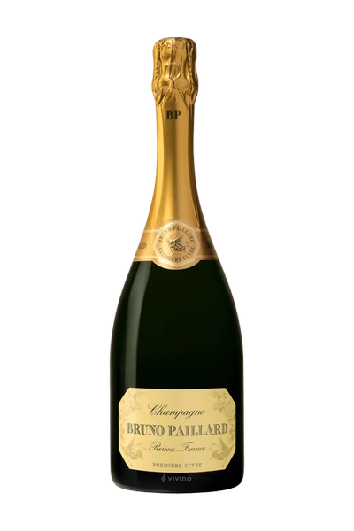
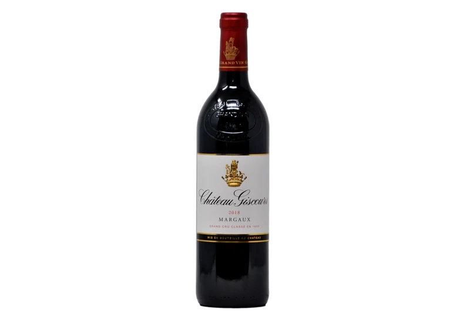
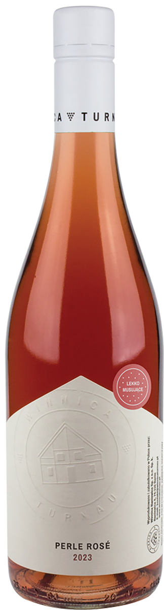

Czym jest wino
Wino to napój alkoholowy otrzymywany w wyniku fermentacji soku z winogron. Proces fermentacji przekształca cukier zawarty w owocach w alkohol i dwutlenek węgla pod wpływem działania drożdży. Wino jest produkowane z różnych odmian winogron, które nazywamy szczepami. Różnorodność szczepów wpływa na smak, aromat, strukturę i kolor wina, co pozwala na tworzenie bogatej gamy stylów i rodzajów win.
Szczepy winorośli, czyli odmiany winogron, dzielą się na wiele różnych kategorii, które można z grubsza podzielić na szczepy białe i szczepy czerwone. Każdy szczep ma swoje charakterystyczne cechy, które wpływają na końcowy smak i aromat wina.
Szczepy win białych
Chardonnay
szczep
pochodzący z Francji, znany z wszechstronności. Daje wina o
szerokiej palecie smaków od świeżych i owocowych po bogate, pełne i
beczkowane. Typowe aromaty to jabłka, cytrusy, masło i wanilia.
Sauvignon
zielonych jabłek, agrestu, czasem z nutą trawiastą lub mineralną.
Blanc charakteryzuje się wyraźną kwasowością i aromatami cytrusów,
Riesling
szczep o wysokiej kwasowości, często o mineralnym charakterze. Daje
zarówno wina wytrawne, jak i słodkie, o aromatach jabłek, brzoskwiń,
miodu i kwiatów.
Pinot Grigio
(we Włoszech) lub Pinot Gris(we Francji) lekki szczep o łagodnym
charakterze, aromatach cytrusów, jabłek, czasem miodu.
Gewürztraminer
szczep o intensywnym aromacie, często kwiatowym i przyprawowym (nuty
róży, liczi, imbiru), popularny w Alzacji.
Szczepy win czerwonych
Cabernet Sauvignon
jeden z najważniejszych szczepów na świecie, charakteryzujący się
wysoką taniną, ciemnym kolorem i intensywnymi aromatami czarnych
porzeczek, wiśni, cedru i czekolady. Często dojrzewa w beczce, co
wzbogaca smak.
Merlot
daje wina o miękkich taninach i owocowych aromatach, takich jak
śliwki, wiśnie, a także czekolada. Często łagodniejszy i bardziej
przystępny od Cabernet Sauvignon.
Pinot Noir
delikatny szczep, typowy dla Burgundii, o jasnym kolorze i
eleganckim, owocowym charakterze (aromaty wiśni, truskawek, malin),
czasem z nutami ziemistymi.
Syrah/Shiraz
w zależności od regionu produkcji, wina z tego szczepu mogą mieć
nuty pieprzu, czarnych owoców, śliwek, czekolady. Syrah to nazwa
stosowana we Francji, natomiast Shiraz w Australii.
Tempranillo
hiszpański szczep o aromatach czerwonych owoców, śliwek, skóry i
przypraw, często dojrzewający w beczkach dębowych.
Sparkling wine
-
Teleki Csaniy
Kraj/region: Węgry/Villany
Szczep: Chardonnay
Teleki chardonnay brut w kieliszku ma elegancki, blady kolor z drobnymi bąbelkami. W intensywnym, złożonym aromacie wyczuć można pomarańcze i dyskretną drożdżowość, z odrobiną cytrusów. Na podniebieniu krystalicznie czyste smaki, zwarta struktura i świeża kwasowość podkreślająca jego owocowy charakter. Kremowe, perliste, idealnie zharmonizowane. Zbiory miały miejsce 24 sierpnia 2021 r w winnicy Dobogó. Wino dojrzewało na osadzie 22 miesięce.
-
Cava Lagrima Real
Kraj/region: Hiszpania/Katalonia
Szczep: Chardonnay
Bladożółta, słomkowa, jasna cava, z drobnymi i trwałymi bąbelkami. Złożony i intensywny aromat, przypominający białe i pestkowe owoce na eleganckim tle ciasta z nutami kwiatowymi. W ustach okrągłe, dźwięczne, kremowe bąbelki, dobra kwasowość i duża długość, przywołujące wspomnienia mokki i moreli. T a cava jest idealna do delektowania się nią przez cały posiłek. Jego kremowość w ustach zapobiega nasyceniu podniebienia. Jest szczególnie odpowiedni do pieczonych ryb i mięs oraz do tych menu, które ze względu na swoją długość wymagają tej rezerwy, aby uniknąć mieszania się doznań między potrawami.
-

Zardetto Prosecco
Kraj/region: Włochy/Veneto
Szczep: Glera
Valdobbiadene, Prowincja Treviso, Szczep Glera, Świeże i kwiatowe ze skoncentrowanym aromatem cytrusów, w smaku mineralne z nutami skórki chleba.
-

GostArt
Kraj/region: Polska/Lubuskie
Szczep: Riesling, Pinot Blanc, Pinot Gris
Wino zrobione metodą tradycyjną (Szampańską).Dominujące aromaty brzoskwiń i zielonych jabłek. W ustach kremowe, z delikatną kwasowością.
-

Pommery Champagne Rose Brut
Kraj/region: Francja/Szampania
Szczep: Chardonnay, Pinot Noir, Pinot Meunier
Delikatny różowy szampan, dojrzewający co najmniej 42 msc. Wyczuwalne aromaty brzoskwiń, nektarynki, czerwonych jabłek z nutą pieczonego ciasta i miodu. Winogrona pochodzą wyłącznie z winnic Premier i Grand Cru. Cukier resztkowy 4g/1l.
-

Bruno Paillard Premiere Cuvee Extra Brut
Kraj/region: Francja/Szampania
Szczep: Chardonnay, Pinot Noir, Pinot Meunier
Okręt flagowy stylu Bruno Paillard, wino najwyższej jakości, produkowane w systemie Solera czyli wieczystej rezerwy z 1985 roku. System Solera - do butelek trafia wino najstarsze, z samego dołu i jest uzupełniane z win z kolejnych pozimów, aż do najmłodszego rocznika. Główne aromaty ujawniają aromaty cytrusowe pochodzące ze szczepu Chardonnay, następnie pojawiają się aromaty czerwonych owoców z Pinot Noir, z czasem w kieliszku pojawiają się nuty owoców egzotycznych z Pinot Meunier. Smak żywy, aromaty przechodzą do ust, królują cytrusy.
-
Bruno Paillard Blanc de Blancs Grand Cru
Kraj/region: Francja/Szampania
Szczep: Chardonnay
Tłoczone wyłącznie z winnic Grand Cru, składa się z win rezerwowych. 25 roczników, począwszy od 1985 roku. Blade, z zielonymi odcieniami. Aromaty cytrusów (limonka i grejpfrut), białe kwiaty. W ustach cytrusowe z wyraźną nutą mineralności. Idealne do owoców morza.
-
Veuve Cliquot Brut
Kraj/region: Francja/Szampania
Szczep: Chardonnay, Pinot Noir, Pinot Meunier
W bukiecie tego wibrującego drobnymi bąbelkami szampana wybijają się aromaty białych owoców i rodzynkowe, dopełnione nutami wanilii i francuskiej brioszki. Prawdziwy klasyk, doskonały jako aperitif lub wyrafinowane wino do kolacji, jak i wino towarzyszące spontanicznemu towarzyskiemu wieczorowi.
-

Dom Perignon
Kraj/region: Francja/Szampania
Szczep: Chardonnay, Pinot Noir
Niezwykle elegancki i pełen smaku. W nosie rozwija się zieleń eukaliptusa, mięty i śliwek, kwiat pomarańczy, kardamon, lukrecja. Na podniebieniu jest elegancji, luksusowy w swej prostocie i precyzji. Finisz pełen spójności. Nazwa pochodzi od mnicha Dom Pierre Perignon, któremu przypisuje się odkrycie szampana. T a słynna marka jest nazwana na jego cześć. Przypisuje się mu wypowiedź 'Chodźcie prędko, ja pije gwiazdy!' którą miał wygłosić podczas pierwszej konsumpcji odkrytego przez siebie napoju.
-

Luis Roederer Cristal 2014
Kraj/region: Francja/Szampania
Szczep: Pinot Noir, Chardonnay
Dojrzewa w beczkach co najmniej 4 lata w piwnicach, następnie odpoczywa 6 miesięcy w butelkach. Przeważają aromaty cytrusów i zielonego jabłka. Mocna mineralna jakość z nutami białych owoców. Najsłynniejsze wino tego domu powstało aby zaspokoić gusta cara Aleksandra II. Car poprosił Louisa Roedera, aby co roku rezerwował dla niego najlepsze cuvee.
White wine
-

Terlan Kreuth
Kraj/region: Włochy/Trentino Alto Adige
Szczep: Chardonnay
Błyszczący atrakcyjny słomkowożółty kolor. Aromaty owoców egzotycznych i cytrusów, pikantne mineralne nuty krzemienia. Na podniebieniu harmonia, miękkie i kremowe elementy połączone z owocową nutą tworzą przyjemną całość z delikatnie słonym mineralnym zakończeniem.
-
Cantina Terlano Terlaner
Kraj/region: Włochy/Górna Adyga
Szczep: Chardonnay, Pinot Bianco, Sauvignon
Bukiet z nutą białej brzoskwini, owoców tropikalnych, zielonego jabłka oraz szałwii, melisy i mięty, z wyczuwalnym, delikatnym korzennym niuansem
-

Cantina Terlano Gewurztraminer
Kraj/region: Włochy/Trentino Alto Adige
Szczep: Gewurztraminer
Gewurztraminer, Słodkie nuty zapachowe brzoskwini oraz melona idealnie odwzorowują charakter smaku tego wina.
-

Nals Margreid Hill
Kraj/region: Włochy/Trentino Alto Adige
Szczep: Pinot Grigio
Wino to charakteryzuje się bardzo przyjemnym, intensywnym bukietem zapachowym, w którym dominują nuty cytrusowe i egzotyczne owoce tropikalne, takie jak ananas i mango. W tle wyczuwalne są delikatne nuty ziół i kwiatów, które nadają mu subtelnego aromatu.
-

Franz Haas Gewürztraminer
Kraj/region: Włochy/Adyga
Szczep: Gewurztraminer
ma intensywny, złocistożółty kolor z głębokim bukietem złożonych aromatów, takich jak liczi, skórka pomarańczy, goździki, gałka muszkatołowa i róża. Wino potrzebuje kilku chwil odpoczynku w kieliszku, aby w pełni się rozwinąć. Podniebienie jest pełne i pobudzające dzięki swojej strukturze, świeżości i żywotności, z lekką goryczką iintensywną nutą końcową. Gewürztraminer osiąga pełną ewolucję dopiero po kilku miesiącach leżakowania w butelce.
-
Franz Haas Manna
Kraj/region: Włochy/Adyga
Szczep: Riesling
Wieloszczepowa kompozycja rieslinga, chardonnay, sauvignon oraz późno zbieranego gewurztraminera; flagowa biała etykieta Haasa.W młodości wino posiada żółto-złote nuty, natomiast po kilku latach dojrzewania pojawiają się intensywne złociste tony. Dzięki swoim szczególnym właściwościom Manna uwodzi złożonym i warstwowym bukietem, który przywołuje nuty czarnego bzu, pistacji i płatków róż. Uderza swoją złożonością i koncentracją w połączeniu z miękką elegancją i mineralną strukturą.
-
Vietti Roero Arneis
Kraj/region: Włochy/Piemonte
Szczep: Arneis
Świeże aromaty kwiatowe połączone z cytrusem i melonem, w smaku dobrze wyważone, eleganckie ze świeżą kwasowością.
-
Querciabella Batar
Kraj/region: Włochy/Toskania
Szczep: Chardonnay, Pinot Bianco
Jasny, słomkowożółty rdzeń ze złotymi odcieniami. Bukiet jest szeroki, aromatyczny i uwodzicielski z aromatami kwiatów akacji, rumianku, żółtej brzoskwini, żółtej śliwki i melona. W ustach powtarzają się owoce tropikalne z uderzającą mineralnością i bardzo długim finiszem.
-
Grifo del Quartaro Gavi di Gavi
Kraj/region: Włochy/Piemonte
Szczep: Corteze
Świeże, wytrawne, intensywne, harmonijne i przyjemnie owocowe, miękkie z dobrą treściwością, dobrze zbalansowana kwasowość i przyjemnie długi posmak.
-

Conte della Vipera Antinori
Kraj/region: Włochy/Umbria
Szczep: Sauvignon Blanc, Sémillon
Conte della Vipera jest hołdem złożonym pierwotnym właścicielom zamku, a na etykiecie znajduje się ilustracja przedstawiająca kaplicę San Giovanni (św. Jana), małą kaplicę znajdującą się na terenie posiadłości. Conte della Vipera jest słomkowożółta z jasnozielonymi odcieniami. Nos obfity i urzekający, oferujący nuty kwiatowe, nuty białego miąższu owoców i ananasów, które prowadzą do przyjemnych aromatów owoców cytrusowych.
-
Cantina Fina, El Aziz
Kraj/region: Włochy/Sycylia
Szczep: Grillo
Ma intensywną słomkowożółtą barwę z wyraźnymi złotymi odcieniami, w stronę bursztynu. Perfumy i słodkie zapachy, które zachwycają swoją ewolucyjną złożonością, przypominającą bardzo dojrzałe i suszone białe owoce, takie jak: ananas, brzoskwinia i morela, a także: wanilia, miód i słodkie przyprawy, o miękkich i otulających zapachach i aromatach o świetnej strukturze i harmonii , rozgrzewające alkoholem, z delikatną goryczką na finiszu.
-
Jose Pariente Sauvignon Blanc
Kraj/region: Hiszpania/Rueda
Szczep: Sauvignon Blanc
Rueda, Sauvignon Blanc, Nuty roślin i owoców egzotycznych takich jak marakuja, grapefruit i ananas. W ustach świeże z wyczuwalnym smakiem wyżej wymienionych owoców. Idealne do drobiu, ryb oraz sałatek.
-
Jose Pariente Verdejo
Kraj/region: Hiszpania/Rueda
Szczep: Verdejo
Gama owoców białych oraz cytrusów połączona z klasyczną dla Verdejo goryczką na finiszu. Wyczuwalne aromaty zielonego jabłka.
-
Jose Pariente Barrel Fermented
Kraj/region: Hiszpania/Rueda
Szczep: Verdejo
Wino spędzające w beczce 9 miesięcy cechuje się intensywnymi aromatami korzennymi i balsamicznymi, w smaku jest pełne i oleiste.
-
Jose Pariente Apasionado
Kraj/region: Hiszpania/Rueda
Szczep: Sauvignon Blanc
Wino półsłodkie zrobione metodą 'Apasionado' czyli z podsuszanych winogron. Aromaty mango, cytrusów oraz miodu. Idealne do deserów.
-
Prieto Pariente
Kraj/region: Hiszpania/Castilla
Szczep: Viognier
Wyczuwalne zapachy kwiatów, dzikich ziół oraz cyrtusów, przekładają się na długi i cytrynowy finisz.
-
Granbazan Etiqueta Verde
Kraj/region: Hiszpania/Galicja
Szczep:Albarino
Delikatne aromaty dojrzałych owoców pestkowych oraz brioszki, w smaku ma zdecydowany egzotyczny profil połączony z kwasowością.
-

Abbotts & Delaunay Le Palajo Domaine de la Metairie D'Alan
Kraj/Region: Francja, Langwedocja
Szczep: Białe wino, szczep nieokreślony
Bladożółty kolor. Aromat z nutami mąki pszennej, delikatnych ciasteczek, jaśminu i kwiatów pomarańczy. Eleganckie i jedwabiste wino, idealne do ryb i owoców morza.
-
La Chablisienne Chablis 1er Cru
Kraj/Region: Francja, Burgundia, Chablis
Szczep: Chardonnay
Zapach cytrusów i kwiatów z delikatnym aromatem jodu. W smaku soczyste i mineralne, z lekkim miodowym finiszem.
-
Sancerre Blanc Terroir de Silex
Kraj/Region: Francja, Dolina Loary
Szczep: Sauvignon Blanc
Owocowe i mineralne wino, z charakterystycznym "krzemiennym" smakiem. Doskonałe do rybnych dań.
-
Lupe Cholet Corton
Kraj/Region: Francja, Burgundia
Szczep: Chardonnay
Elegancki aromat egzotycznych przypraw, imbiru i cynamonu. W smaku pełne i bogate, z intensywnymi nutami drewna.
-

Lamblin Roger Roblot
Kraj/Region: Francja, Chablis
Szczep: Chardonnay
Smak z nutami brioche, tostów i dojrzałych owoców. Gęste i mineralne, z długim jedwabistym finiszem.
-
Edouard Delaunay Puligny Montrachet Le Village
Kraj/Region: Francja, Puligny-Montrachet
Szczep: Chardonnay
Jasnozłoty kolor. Aromat bergamotki, brioche i minerałów. Eleganckie, zrównoważone, z długim aksamitnym finiszem.
-

Gewurztraminer Grand Cru Mambourg - Jean Bernhard
Kraj/Region: Francja, Alzacja
Szczep: Gewurztraminer
Intensywny aromat egzotycznych owoców (mango, liczi), pikantne, dobrze zbalansowane, z lekką taniną.
-

Schloss Gobelsburg Ried Lamm
Kraj/Region: Austria, Kamptal
Szczep: Grüner Veltliner
Aromaty dojrzałych mirabelek, ananasa i ziół. Bogate i kremowe w smaku, z pikantnym białym pieprzem.
-

Schloss Gobelsburg Zöbing
Kraj/Region: Austria, Kamptal
Szczep: Riesling
Aromaty gruszek, pigwy, białych brzoskwiń, z lekką ziemistością i wyraźną kwasowością na finiszu.
-
Golden Reserve - Weingut PFAFFL
Kraj/Region: Austria, Wiedeń
Szczep: Grüner Veltliner
Aromaty melona, ananasa, z nutami przypraw i ziół. Złożone i dobrze zbudowane, z delikatną słodyczą.
-

Weissburgunder NUSS, Weingut PFAFFL
Kraj/Region: Austria
Szczep: Pinot Blanc
Aromaty jabłek i gruszek, pełne i soczyste, z nutami orzechów i cytrusów, długi owocowy finisz.
-
Turnau Chardonnay
Kraj/Region: Polska, Zachodniopomorskie
Szczep: Chardonnay
Żywy aromat cytrusów i kwiatów, z delikatnymi nutami mineralnymi. Świeże, o zrównoważonej kwasowości i eleganckim finiszu.
Red wine
-
Guado Al Tasso
Kraj/region: Włochy, Toskania
Szczep: Cabernet Sauvignon, Merlot, Syrah
Supertoskan z jednej z najlepszych winnic w regionie. Leżakowane co najmniej przez 16 msc. Wyczuwalne aromaty śliwki, jeżyny i czarnej porzeczki. W ustach wyczuwalny dąb, tytoń i czekolada. Idealne do jagnięciny, czerwonego mięsa, dziczyzny oraz ciężkich sosów.
-

Anitori Solaia Toscana
Kraj/region: Włochy, Toskania
Szczep: Cabernet Franc, Cabernet Sauvignon, Sangiovese
Leżakowany co najmniej 18 msc. Absolutnie perfekcyjny, wielowymiarowy, bardzo intensywny niezwykły supertoskan. Wino wybitne, absolutnie wyjątkowe. Głęboki rubinowy kolor, wyraziste aromaty oraz słodkie nuty czerwonych jagód i przypraw. Wino ma klasyczny styl i charakteryzuje się harmonią smaków między kwasowością, taninami a owocami. Wielki potencjał. Co roku zdobywa wiele nagród.
-
Vietti Barolo Castiglione
Kraj/region: Włochy, Piemont
Szczep: Nebbiolo
30 msc. w beczce, aromaty śliwki, wiśni, jeżyny oraz tytoniu. Barolo to jedno z najbardziej cenionych włoskich win. Idealnie pasuje do obfitych dań mięsnych np. dziczyzna, kaczka, wołowina, wieprzowina.
-
Tezza Amarone della Valpolicella Valpantena
Kraj/region: Włochy, Wenecja Euganejska
Szczep: Corvina 80%, Rondinella 20%
Włoskie czerwone wino wytrawne, z uprawy organicznej. Głęboka rubinowa czerwień, aromaty konfitury wiśniowej, wanilii i liści tytoniu. Po zerwaniu grona suszone przez 100 dni. Leżakowało 36 miesięcy w beczkach, następnie 6 miesięcy w butelkach. Idealne do czerwonego mięsa.
-
Lagerla Brunello di Montalcino DOCG
Kraj/region: Włochy, Toskania
Szczep: Sangiovese
Znane i cenione za elegancję i przyjemne aromaty. Wyjątkowo aromatyczne, miękkie i aksamitne w smaku. Leżakuje w butelce przez co najmniej 8 msc. Kolor intensywnie rubinowy, w nosie słodki fiołek, irys oraz nuta przypraw. Najlepiej podawać do dziczyzny, czerwonych mięs, zdekantowane.
-
80 Vecchie Vigne Primitivo di Manduria DOC
Kraj/region: Włochy, Apulia
Szczep: Primitivo
Wino z 80-letnich krzewów, aromat dojrzałych owoców śliwkowych z nutą kakao i wanilii, w smaku czuć dojrzałe ciemne owoce, wanilia i czekolada. Aksamitne i intensywne.
-
Cantine San Marzano Talo
Kraj/region: Włochy, Apulia
Szczep: Primitivo di Manduria
Aromaty dojrzałych owoców śliwki z nutą kakao i wanilią. W smaku intensywnie owocowe z delikatnym posmakiem wanilii i czekolady.
-
Tezza Valpolicella Ripasso Valpantena Superiore
Kraj/region: Włochy, Veneto
Szczep: Corvina
Wyczuwalne aromaty rodzynek oraz oregano, w smaku delikatna goryczka, po której czuć słodko-gorzką wiśnię z dodatkiem czarnej porzeczki i jeżyny.
-
Domini Veneti Appassimento IGT Rosso Venezie
Kraj/region: Włochy, Veneto IGT
Szczep: Corvina, Corvinone, Rondinella
Przyjemne bukiety dojrzałych czerwonych owoców z akcentami wanilli i słodkich przypraw, smak harmonijny z miękkimi taninami, długi aksamitny finisz z korzennymi nutami.
-
Querciabella Chianti Classico DOCG
Kraj/region: Włochy, Toskania
Szczep: Sangiovese
Aromaty wiśni, lukrecji i jagód jałowca, w smaku czerwone owoce oraz delikatne taniny.
-
Vietti Perbacco Nebbiolo
Kraj/region: Włochy, Piemont
Szczep: Nebbiolo
Wino z nutami mięty, przypraw i słodyczy, w smaku okrągłe i eleganckie taniny dodają długiego i wyrafinowanego finiszu.
-
Franz Haas Schweizer 2021
Kraj/region: Włochy, Alto Adige
Szczep: Lagrein
Bardzo intensywny bukiet z nutami czerwonych owoców, fiołków, przypraw i kakao. W ustach aksamitne taniny, długi, otulający finisz.
-

Franz Haas - Ponkler
Kraj/region: Włochy, Alto Adige
Szczep: Pinot Nero
Intensywne nuty dojrzałych jeżyn, anyżu gwiazdkowatego i skóry. W ustach pełne, bogate, z rozwijającymi się taninami, długi finisz z nutami kory chinowca.
-
Finca Resalso D.O.
Kraj/region: Hiszpania, Ribera del Duero
Szczep: Tempranillo
Aromaty jeżyny i czarnej porzeczki, w smaku z łagodnymi taninami i zbalansowaną kwasowością.
-
Emilio Moro D.O.
Kraj/region: Hiszpania, Ribera del Duero
Szczep: Tempranillo
6 msc w beczkach z dębu francuskiego, aromaty drewna, czerwone owoce i wyrafinowane taniny.
-
Emilio Moro Malleolus
Kraj/region: Hiszpania, Ribera del Duero
Szczep: Tempranillo
18 msc. w beczkach, intensywne czarne owoce, korzenne nuty, jedwabiste taniny, oceny powyżej 93 pkt.
-
Emilio Moro Malleolus De Valderamiro
Kraj/region: Hiszpania, Ribera del Duero
Szczep: Tempranillo
-
Imperial Reserva
Kraj/region: Hiszpania, Rioja
Szczep: Tempranillo
Aromaty dojrzałej wiśni i świeżego migdała.
-
Enrique Mendoza Petit Verdot 15 Meses
Kraj/region: Hiszpania, Walencja
Szczep: Petit Vrerdot
Leżakowane przez 15 miesięcy (10 miesięcy w nowych beczkach z dębu Oregon i 5 miesięcy w rocznych beczkach z francuskiego dębu). O czerwonej wiśniowej barwie i fioletowych refleksjach. Bukiet kojarzy się z dzikimi owocami takimi jak jeżyny, jagody i truskawki splecione grafitem, humusem, podmokłą glebą, runem leśnym, dębem i wędzonką. W ustach mocne, dobrze zbudowane, mięsiste, z dużą ilością tanin i owocu. Naturalne osady mogą pojawiać się wraz z wiekiem.
-

Bodegas Sonsierra, Perfume de Sonsierra
Kraj/region: Hiszpania, Rioja
Szczep: Tempranillo
Za design butelki odpowiada jeden z projektantów domu mody Louis Vuitton intensywne wiśniowo-czerwone wino leżakuję w beczkach 28 miesięcy, dlatego charakteryzuje się mocnymi aromatami lukrecji, jeżyn, czerwonej porzeczki, karmelu, mokki i odrobiną mięty. W ustach pełne, mocne i żywiołowe. Idealny dodatek do czerwonych mięs, drobiu, tłustych ryb, dziczyzny i dań pikantnych.
-
Likka D.O.Q. Priorat
Kraj/region: Hiszpania, Katalonia
Szczep: Carinena, Garnacha, Syrah, Merlot
60% leżakuje 12 miesięcy w beczkach z dębu francuskiego i 40% w zbiornikach stalowych Produkcja limitowana: 12.000 butelek Nazwa Likka pochodzi z celtyckiego języka i oznacza kamień. Biorąc pod uwagę skalisty krajobraz, który pokrywa glebę Priorat, nazwa ta reprezentuje ducha Priorat w butelce. Winorośl rośnie na llicorella - wtedy nazwa używana dla gleb łupkowych - nadając temu winu słone i ziemiste nuty wraz ze świeżą kwasowością. T a mieszanka czerpie korzyści ze śródziemnomorskiego światła słonecznego, wykazuje nuty tytoniu i wędzonego drewna w nosie oraz wytrawne rodzynki, likier jeżynowy i marmoladę truskawkową.
-
Chateau Nenin Pomerol
Kraj/region: Francja, Bordeaux
Szczep: Merlot, Cabarnet Franc
18 msc w dębowych beczkach. Głęboki czerwony kolor. Owocowe aromaty z nutami dębu i cedru. W ustach doskonała równowaga, gęstość, smak lekko ziemisty i korzenny z nutą czekolady i czarnej porzeczki. Idealne do dziczyzny, czerwonego mięsa i dań z grzybami. Wielokrotnie nagradzane wino (94 pkt. od Roberta Parkera). Pomerol to apelacja w regionie Bordeaux, granicząca z legendarnym Saint Emillion, gdzie powstają jedne z najlepszych czerwonych win na świecie.
-
Saint Cosme Chatenauf-du-pape 2019
Kraj/region: Francja, Rhone
Szczep: Grenache, Mourvedre
Ciemno rubinowy kolor, aromaty dojrzałych słodkich wiśni, malin i czereśni. W smaku zachwyca owocowością, akcentami skórym marmolady owocowej i pikantymi przyprawami.
-
Abbotts & Delaunay Le Materie
Kraj/region: Francja, Solaire
Szczep: Pinot Noir
9 msc w beczkach, bogactwo aromatów owocowych (wiśnia, jagoda, czarna porzeczka), w smaku lekko pieprzne, kwasowe z eleganckimi taninami.
-
Chateau Saint Mambert, Pauillac
Kraj/region: Francja, Bordeaux
Szczep: Cabernet Sauvignon
Aromaty dojrzałych owoców, śliwki oraz drewna. W ustach zwarte z wyczuwalnymi taninami.
-
Saint Cosme Côtes du Rhône
Kraj/region: Francja, Dolina Rodanu
Szczep: Syrah
W zapachu dominują owoce leśne, w smaku intensywnie owocowe z delikatną nutą pieprzu.
-

Vieilles Vignes 'Le Village'
Kraj/region: Francja, Nuits-Saint-George
Szczep: Pinot Noir
ma przepiękny wiśniowy kolor. Wyrazisty, świeży aromat wypieków, takich jak dekadencka tarta malinowo-porzeczkowa, ciastko migdałowe i duszone wiśnie. Następnie pojawiają się dziksze zapachy, typowe dla win Nuits-Saint-Georges (wierzba koszykowa, jeżyny, bukszpan, jałowiec). Subtelne nuty kredy i wapienia. W ustach świeży, mineralny początek, który nadaje winu strukturę i trwałość. W smaku czerwona porzeczka i wiśnia.
-

Château Branaire-Ducru Duluc 2016 Grand Cru
Kraj/region: Francja, Bordeaux
Szczep: Cabernet sauvignon, Merlot, Petit Verdot, Cabernet Franc
Branaire-Ducru 2016 prezentuje w kieliszku elegancki, głęboki kolor. Złożony nos bardzo dojrzałych owoców, który łączy w sobie bogactwo i cudowną świeżość. Aromaty jeżyn, czarnej porzeczki, wiśni i śliwki, oraz nuty cedru i tytoniu. Wino w ustach jest gęste, mięsiste, a równocześnie finezyjne. Smaki pikantnych jagód z odrobiną lukrecji, podbija świeża kwasowość i jędrne, dojrzałe, gładkie taniny. Długi aromatyczny finisz jest zwieńczeniem doskonałego trunku.
-

Chateau Giscours 2018 Margaux Grand Cru
Kraj/region: Francja, Bordeaux
Szczep: Cabernet Sauvignon
Barwa tego wina jest intensywna, purpurowo-czerwona z rubinowymi refleksami. W aromacie odnajdziemy jeżyny, porzeczki i maliny, a także aromatyczne zioła i pikantne przyprawy, oraz nuty gorzkiej czekolady i czarnych trufli. W ustach wino jest aksamitne i gęste, soczyście owocowe, ze świeżą kwasowością, oraz z akcentami ziemistymi i szorstkimi taninami.
-

Edouard Delaunay Clos de Vougeot Grand Cru
Kraj/region: Francja, Cote de Nuits
Szczep:Pinot Noir
-
Umatum
Kraj/region: Austria, Burgenland
Szczep: Zweigelt
Czerwone, wytrawne wino z regionu Burgenland w Austrii, ze szczepu zweigelt.Rubinowy kolor. Zapach ostry w nosie z nutami pieprzu i wiśni, na podniebieniu aromaty wiśni i malin z delikatnym, długim i zrównoważonym finiszem. Klasyczny, średniej wagi zweigelt, bardzo czysty. Biodynamiczne, naturalne drożdże, duże neutralne beczki do starzenia. Winogrona uprawiane na kamienistej, żwirowej glebie, winorośle w wieku od 15 do 30 lat.Pasuje do dań mięsnych.
-

Czajkowski, Thoma 26
Kraj/region: Polska, Podkarpacie
Szczep: Merlot
Wino delikatne na podniebieniu, świeże z owocowymi nutami wiśni, czarnej porzeczk i truskawki. Wyczuwalny aromat czekolady, karmelu i ziaren kawy. Subtelna kwasowość i długi, przyjemny finisz. Wino pełne i dojrzałe, wytworzone z podsuszanych winogron, leżakuje przez 18 miesięcy w beczkach z dębu francuskiego.
-
Cline Cellars Estate
Kraj/region:USA, Kalifornia
Szczep:Pinot Noir
Kalifornia, Sonoma County, Pinot Noir, 6 miesięcy w dębowych beczkach, aromaty malin, wiśni, truskawek, ciemnej czekolady, w smaku świeże i zrównoważone.
-
Cline Cellars Old Vine
Kraj/region: USA, Kalifornia
Szczep: Zinfandel
W ustach pełne, okrągłe, dobrze zbudowane. Bogactwo smaków czarnej wiśni, truskawki i wanilii prowadzi do gładkiego idługiego wykończenia. Bardzo przyjemne, łatwe w piciu wino.
-
Sugar Loaf Pinot Noir 2018
Kraj/region: Nowa Zelandia, Marlborough
Szczep: Pinot Noir
Wino czerwone wytrawne ze szczepu pinot noir. Winogrona zebrane z dwóch wyjątkowych winnic: jedna znajduje się na zboczu wzgórza, na południowym stoku, druga posiada rzadką gliniastą glebę i znajduje się w Dolinie Wairau. Winogrona zostały zebrane ręcznie, a następnie w 90% odszypułkowane (10% pozostało jako cały pęczek). Maceracja na skórkach - 7 dni, następnie fermentacja malolaktyczna w beczkach z dębu francuskiego.Wino bogate jest w aromaty owoców jagodowych i świeżych wiśni, uzupełnione elegancką pikantnością na podniebieniu.
-
Anwilka
Kraj/region: RPA, Stellenbosh
Szczep: Syrah, Cabernet Sauvignon, Petit Verdot
15 miesięcy w beczce z francuskiego dębu, wyczuwalne aromaty czerwonych owoców oraz dębowej beczki. W smaku miękka tanina i elegancka struktura. Wino najlepiej zdekantować nad świeczką przed podaniem (dużo osadu)
-
Constantia Glen Five
Kraj/region: RPA, Constantia
Szczep: Cabernet Franc, Cabernet Sauvignon, Malbec, Merlot, Petit Verdot
Kupaż 5 szczepów wina (stąd nazwa) 18 miesięcy spędzonych w beczce z dębu francuskiego, wyczuwalne aromaty czarnych wiśni oraz przypraw. W smaku dojrzałe ciemne owoce, z zaokrąglonym długim finiszem, wino stworzone na wzór 'Opus One'.
-
Yalumba The Signature
Kraj/region: Australia, Barossa Valley
Szczep: Cabernet Sauvignon, Shiraz
Australia Południowa region znany na całym świecie z upraw winorośli. W smaku wyczuwalna śliwka i czarna porzeczka, wyczuwalne nuty gorzkiej czekolady i piernika.
-
Catena Zapata Mendoza
Kraj/region: Argentyna, Mendoza
Szczep: Malbek
Wino spędzające 12 miesięcy w beczkach dębowych, z aromatem dojrzałych ciemnych owoców, wanilli oraz kawy, skoncentrowany smak wiśni i czerwonych porzeczek z nutą tytoniu i skóry.
-

Catena Zapata Malbec
Kraj/region: Argentyna, Mendoza
Szczep: Malbec
Jedno z najlepszych czerwonych win z Nowego Świata. Spędza 18 miesięcy w beczkach dębowych. Posiada wyjątkowe nuty czerwonych owoców leśnych, wanilii i migdałów. Idealne sprawdzi się jako dodatek do dań z dziczyzny oraz kaczki po pekińsku.
-

Ecral Carmenere, Haras de pirque by Antinori
Kraj/region: Chile, Maipo Valley
Szczep: Carmenere
Głębokie carmenere, które ukazuje czarne oliwki, odrobinę ciemnej czekolady i orzecha włoskiego z czarnymi wiśniami i czarną porzeczką. W smaku pełne, z dużą ilością owoców i bogactwem solidnych tanin.
Rose Wine
-
Hubert Brochard Sancerre Rosé
Kraj/region: Francja, Dolina Loary
Szczep: Pinot Noir
Wina Sancerre Rose pochodzące z odmiany Pinot Noir oferują paletę dopracowaną kolorami (malina, koral, morela, łosoś) i nutami aromatycznymi (brzoskwinia, malina, morela). To wino pochodzi z trzech głównych terroirów i jest produkowane z prawdziwym know-how. Złożone aromaty małych czerwonych owoców i świeżość sprawiają, że wino to jest idealnym różowym winem gastronomicznym. Klasyczna ekspresja Pinot Noir; Sancerre Rosé to świeże, eleganckie wino o wykwintnych aromatach czerwonych owoców, truskawek i malin.
-

Turnau Rose
Kraj/region: Polska, Zachodniopomorskie
Szczep: Rondo, Pinot Noir, Regent
Pierwszy nos pozytywnie zachęca i przechodzi płynnie w intensywne zapachy cytrusów, czerwonej porzeczki, malin i owocu granatu. W ustach orzeźwienie ubrane w kruchą kwasowość równoważoną subtelnym cukrem resztkowym. T o wino Turnau to niebanalny balans rześkości polskich owoców i egzotycznego ciepła cytrusów. Rosé z Winnicy Turnau to nieprzeciętne, półwytrawne wino, idealnie gaszące pragnienie i zadziwiające bogactwem aromatów.
-

Tramari Rose di Primitvo
Kraj/region: Włochy, Kampania
Szczep: Primitivo
Blady różowy kolor. Intensywny aromat śródziemnomorskiej roślinności, nuty wiśni i malin.W ustach świeże i eleganckie, dobrze zrównoważone. Wino pozostaje w kontakcie ze skórkami zaledwie przez kilka godzin.